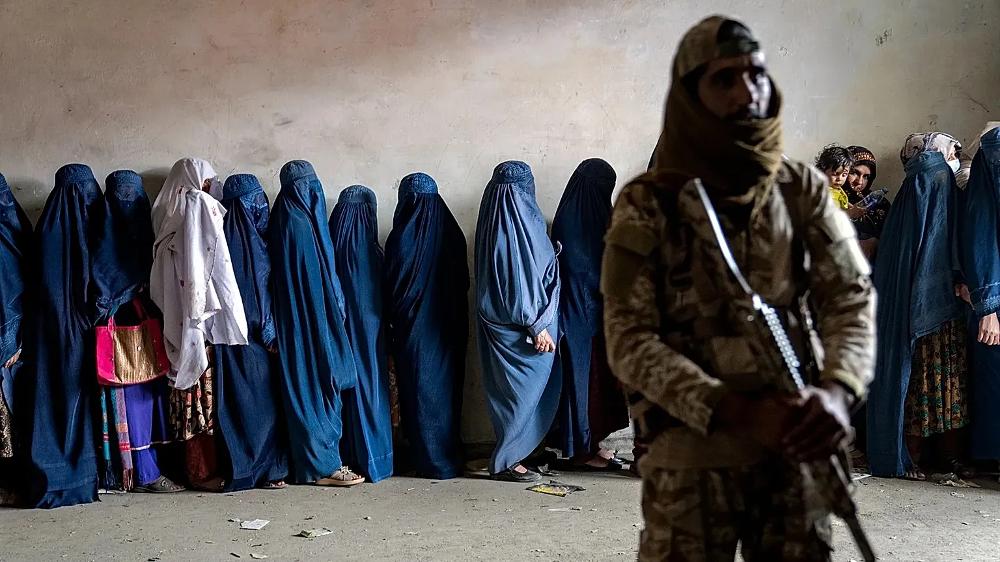

Afeganistão está regredindo?

Euronews:📸
Afeganistão está regredindo?
Segundo a ONU, as restrições atuais impostas pelo Talibã enfraqueceram setores como saúde e educação, prejudicando não só a economia, como os direitos básicos da mulher.
Vídeos em redes socais, feito pela usuária Behind.Chadari, nos conta a regressão que o país está tendo ao negligenciar direitos básico as mulheres e meninas.
O vídeo relata a dor de tudo que foi tirado delas: a liberdade de sonhar. “[...] Veja o Afeganistão agora, as meninas estão completamente proibidas de ir à escola. Estão privando seus direitos humanos básicos. Ninguém deveria sentir essa dor. Nem hoje, nem amanhã.”
Segundo Wosornu – uma das líderes da Missão no Afeganistão -, a fome está em alta, tendo um aumento de 50% em relação ao ano passado. Famílias em desespero faz medidas drásticas: vende as meninas, o que dificulta as ações humanitárias.
Mehran – fundadora do Arquivo de Justiça do Afeganistão -, destacou um Código de Processo Penal, em que consta que os maridos podem agredir suas esposas, contudo, se houver fraturas, hematomas expostos, serão condenados a 14 dias de prisão. Além disso, as mulheres se tornam propriedades dos esposos, onde estão sujeitas a intimidação, violência e prisão em caso de resistência.
As meninas e mulheres do país estão proibidas de falar em público e são obrigadas a usar burcas que cobrem tudo, sem exceção.
A ONU comenta sobre mais de 230 decretos que retiram direitos básicos, como: mulheres não podem estudar, mas também não podem ser atendidas por homens.
Desde o início do mês (junho), o Unama registrou mais de 30 prisões e dezenas de advertências verbais contra as mulheres acusadas de violar o código de vestimentas.
Em Herat, terceira cidade mais populosa, protestos contra as detenções arbitrárias resultaram em uma pessoa morta a tiros e vários feridos, após o uso de força das autoridades.
Fontes:
Behind.chadari
ONU News
Fito por: dino_raaaawr